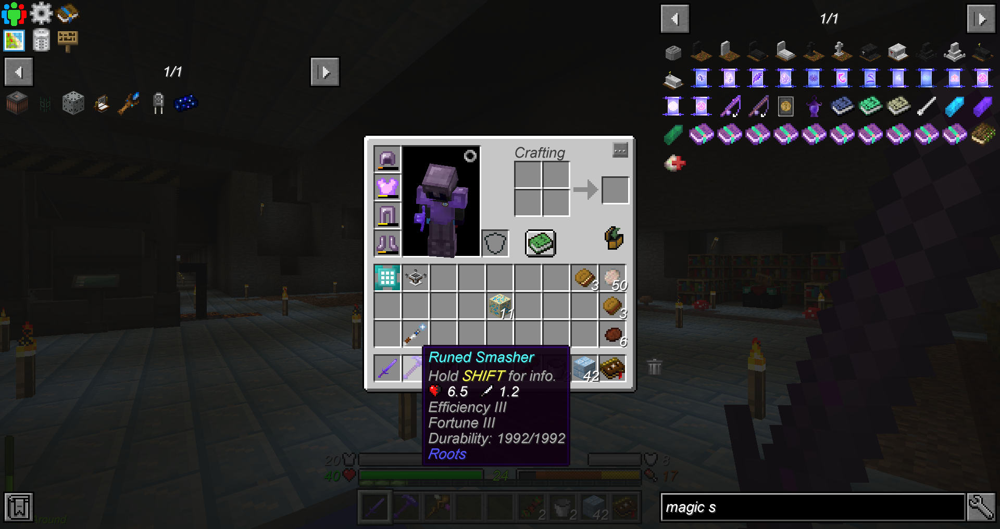

Modpack Author: Dark_Arcana
Origin: Modpack Link
Versions: MC = 1.12.2 - Pack = 1.2.3
Presentation
It’s been way too long since I last played a modpack, I was feeling a craving growing until I couldn’t suppress it anymore. I had seen that one a while ago from videos I believe, this time I’ll be the one going through it! Welcome to Cryoprudon.
Overview
Break the Ice
Starting encased in frozen stone, I have to start working with cave vines, pretty original. Somehow, sticks are gotten through torch duplication with crafting. Now that I have access to basic tools, I can dig through the walls and make a better temporary camp.
Digging up to obtain snow, I hit an obsidian roof, so I first need to go through basic steps with Roots and use the shatter spell to proceed further up. Entering the stone layer, a lot more materials become available along with better basic tools which is a relief because flint was a pain to gather. Through mobs and fossil ores, I can make enough clay for some strainers, catching precious dirt to grow grass on.
As I develop, I feel like I shouldn’t stay on the lower layer, and it’s a bit annoying to be stuck in unusable permafrost stone. Relocating on the surface is going to be the main goal now. As I emerge for the first time during the night, it feels almost overwhelming to have all the natural spawns wandering about.
I spend more than a day and night just running around getting some random things and finding some structures, but it’s overall very barren understandably. I guess there’s only one thing left to do; a greenhouse biosphere to bring back life in this harsh climate.
Springtime
After establishing a safe perimeter, I started spreading grass and even got trees and plant. The terraforming slowed my progression a bit, but now I can experiment with Tetra tools and enter the next step.
Progression gets going faster, I get basic combustion and kiln setups which while tedious, allow me to craft more essential resources. With some midnight oil, the first chapter is now complete and I can generate the precious iron ore, though only in very limited amounts and I can’t even process it yet.

On the other hand, the autobreak trees are really nice for basic automation, and allow me to skip some pickaxe tiers by harvesting amethyst. I see now that I can also make some hopping bonsai pots, my lovelies are back so soon!
Mass production is definitely out of question due to costs, but it’s still a good slow supply source while working on other things. The biggest goal now is to make iron ingots somehow, and it looks like smelting ore is really not easy in this pack. Past some more Roots rituals and crafting for missing elements, I get a huge upgrade that I was dearly missing; a basic furnace, as vanilla as can be. No difficult steps, easy cooking with fuel, how I missed you. This enables a lot of resource production and efficiency as I was bottlenecked by stone, only able to make 8 at a time before.
Ore Cores and More
That done, I can focus on smelting iron, and damn that’s not easy, a single ore takes several minutes of intense work almost like a real blacksmith. I only made a small dozen of ingots, but that’s enough to upgrade my combustion casing for essential resources to be easier to obtain. I still need more iron, but I’ll leave it for later as it requires a lot with the basic smelting currently…
For now, getting runic shears is enough to reach a new mod’s progression, let’s see what this will require. Apparently, it’s mostly waiting to get golden leaves, then I could do some nature rituals of another sort, but this wasn’t actually an essential part of progression. Mostly a way to convert iron ore faster, which isn’t a bad deal.
I took that chance to explore a bit more and find materials for future needs, and made Roots high tier tools. With these settled, I have more crafting to handle for diamond production and the next steps using the gem shards and cores.
Apparently there’s no nether in this pack, so instead I have to make the few relevant resources of it. After a whole lot of core crafting, I finish up the nature mods and second chapter neatly.
First Technology
Thankfully I found an astral sorcery ruin earlier while exploring so I can directly proceed with that questline, however I’ll need to find more ruins first for starter aquamarine. It took a frustrating amount of back and forth to realize I had the age old bug with natural crystals that require reloading so it can properly allow me to craft the first celestial table.
Meanwhile an essential machinery upgrade is awaiting me with Magneticraft, but that’ll require another big burst of iron. Once this is done however, I’ll be able to grind and wash ore for complete doubling production, saying goodbye to the slow nature altar conversion.
This will also introduce my favorite power generation, thermopiles! Right at the end, I hit another issue, this one had me edit the recipe for corrugate iron machine blocks because it was being overwritten by another recipe, and there was no system allowing to handle recipes using the same pattern.
Now all my issues were gone, with a working grinder all my stashed ores can be processed, and what a good surprise to find out the plentiful copper ores have byproduct chances for iron and gold!
This means I can even build the sieve machine next without needing to do more core crafting, semi automation production is truly well underway. I also get a machine to make plates and can now make the immersive engineering basic multiblocks for coal coke and steel, slowly working while I can continue other progression steps.
Astral Pondering
I went on a long expedition using the sky fling spell from Roots and the glider for fast travel and found enough ruins to quickstart the wells. I now can begin search for the suitable spot for the real altar now that I have gained enough liquid starlight.
I also use that newly gained resource to setup an infinite sand generation along aquamarine drops, it can also be used to convert flesh into cow leather for books. I’ll be making a decent library for strong enchanting and hopefully get fortune to capitalize on the ores I get.

Begins a lengthy journey of days and nights spent building the astral sorcery altars and progressing, not much else of note happening inbetween.
When I finally get starmetal ingots, I can end the third chapter while reaching the attunement stage, gaining even more starmetal through crystal growing. The starlight infuser can even triple ore production, now we’re talking!
Pulled Out
My first goal for the new chapter is the ore generator, finally making iron less troublesome to obtain. I spend remaining resources on making the next machines that unlock new materials and the very useful ender IO cables. Automation can now be taken seriously, a lot of production will stop requiring my input as much…
The ore puller is semi functional, but I have to setup a proper power source, and a way to automatically collect the ore gained. Due to this, I have to begin restructuring a whole inventory network that was pretty much inexistent until now, I need to use the radiant chest system it should be helpful.
This is quite interesting, in arcane archives I’m discovering a great mod I’ve snubbed too often in the past. It’s both simple and convenient, but not overly so, and feeds my need of a giant centralized hoard. While waiting for the crystals to grow, I’ve done the task of making an observatory for fun.
With my much improved inventory storage, I can finalize a decently automated setup for the ore puller! And… yeah… this is where it’s going to end. I noticed right after that all the subsequent quests were empty without even description, I guess the pack never got finished and I reached the frontier. Honestly I didn’t have the will to power through checkmark quests, and I guess the current state is a good one to end the adventure on, after all I got the ore generation running well now.
Conclusion
It’s a bit sad to end things unfinished after the last one, but I guess it was difficult to predict in advance and the start was still a pretty solid and fun experience. The iron machine blocks bug in the middle of progression was a good hint of how things were going to go.
There was an interesting low level progression with very scarce iron/gold as backbone. I got to try out some mods I neglected before, and it involved a lot of handicraft. I fell in love with Roots hard, and made me oh so glad for not having Botania, Roots is just way more fun and less grindy.
I also want to shoutout Ard, which is the only one I found(of three) while looking up the modpack that seems to have completed chapter 6. Gotta respect the hustle despite it not being a very fun process at the end. On a sidenote if you own a curseforge page, please allow comments, it’s just so important for users and history.
The start was really interesting, sadly it never was finished, I guess this is also part of the risks in playing modpacks. At least I got to learn more niche mods and sate my minecraft thirst… temporarily.